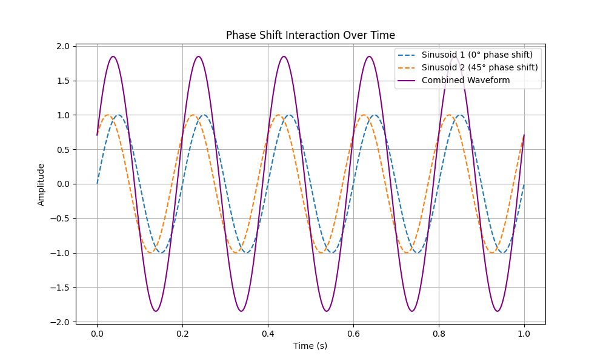
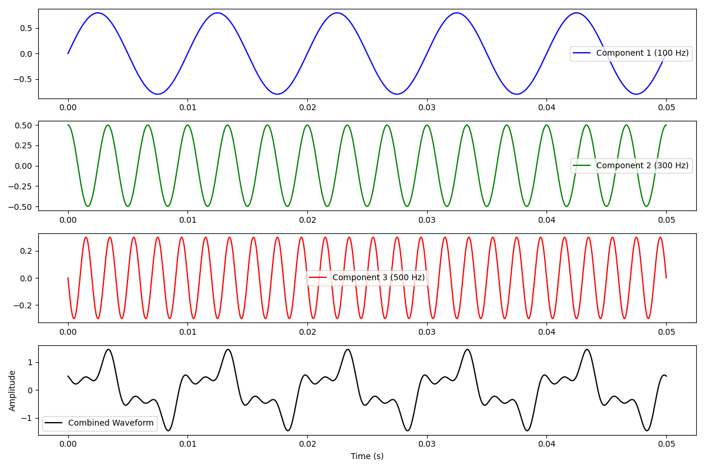
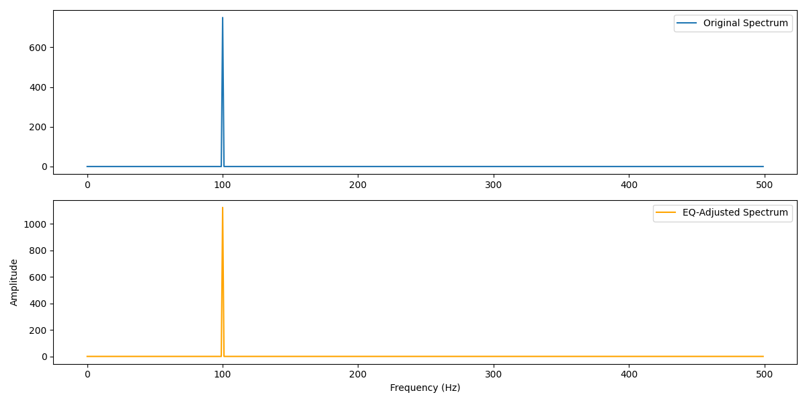

1. Key Properties of Sinusoidal Signals
A sinusoid represents the simplest form of an audio signal, consisting of a single frequency or tone. Sinusoids form the foundation of more complex waveforms and are used to build complex sounds through synthesis and analysis.
Basic Components of a Sinusoid
- Amplitude (A): The peak value of the wave, which determines its loudness or intensity.
- Period (T): The time taken to complete one full cycle, measured in seconds.
- Frequency (f): The number of cycles per second, measured in Hertz (Hz), calculated as:
\[ f = \frac{1}{T} \]
Example of Sinusoid Frequencies:
- If a sinusoid has \( T = 0.25 \, \text{s} \), its frequency is \( f = 4 \, \text{Hz} \).
- Common audio frequencies include 100 Hz (bass), 1 kHz (mid), and 10 kHz (treble).
Conversion Tip
When working with time delays, remember to convert milliseconds (ms) to seconds (s) by dividing by 1000. For example, 150 ms = 0.15 s.
Chart of Sinusoid Frequencies
Image Placeholder: 
Tutorial 8: Sinusoidal Signals, Phase, and Addition of Sinusoids
2. Phase and Phase Delay in Sinusoids
Phase (\( \phi \)) represents a specific point within a cycle of a sinusoid, typically measured in radians or degrees. Phase is critical in aligning signals, understanding interference, and determining how combined sinusoids form complex waveforms.
Understanding Phase and Phase Delay
The phase of a sinusoidal wave determines its position within a cycle at any given time. When comparing two sinusoidal waves, a phase delay indicates how much one wave lags behind another. This delay directly affects how the waves interact, producing effects like constructive or destructive interference.
Phase Delay Calculation
Phase delay for a sinusoid with frequency \( f \) and time delay \( t_D \) is calculated using the formula:
where:
- \( f \) is the frequency of the sinusoid in Hertz (Hz).
- \( t_D \) is the time delay in seconds.
Example Interpretation of Phase Delay
For a 10 Hz signal with a time delay of 150 ms:
- Convert the time delay to seconds: \( t_D = 0.15 \, \text{s} \).
- Calculate the phase delay:
\[ \phi = -2 \pi \cdot 10 \cdot 0.15 = -9.42 \, \text{radians} \]
This means that the second wave lags behind by 9.42 radians, affecting how it combines with any overlapping wave.
Phase Conversion between Degrees and Radians
Phase angles can be converted between degrees and radians. Below is a quick reference:
- 0° = 0 radians
- 90° = \( \frac{\pi}{2} \) radians
- 180° = \( \pi \) radians
- 360° = \( 2\pi \) radians
Worked Example: Phase Impact on Signal Overlap
Imagine two signals of the same frequency and amplitude. If their phases are:
- **In Phase (0°)**: The waves align perfectly, creating a stronger, combined signal.
- **Out of Phase by 180°**: The peaks of one wave align with the troughs of the other, canceling each other out.
Table of Radian to Degree Conversions
This table shows conversions for key phase angles in degrees and radians:
| Degrees (°) | Radians |
|---|---|
| 0° | 0 |
| 90° | \( \frac{\pi}{2} \) |
| 180° | \( \pi \) |
| 360° | \( 2\pi \) |
Tips for Avoiding Phase Calculation Errors
- Always convert time units (e.g., milliseconds to seconds) before calculating phase delay.
- When converting between radians and degrees, use \( 180^\circ = \pi \) as a baseline.
- Double-check units to maintain consistency, especially in calculations that involve multiple frequencies.
3. Fourier Transform Analysis and Sinusoidal Components
The Fourier Transform is a powerful mathematical tool used to decompose complex signals into simpler sinusoidal components, each defined by its own frequency, amplitude, and phase. This decomposition is foundational in fields such as sound synthesis, signal processing, and audio engineering, as it helps reveal the distinct frequencies that compose a complex waveform.
Understanding Fourier Transform Components
- Frequency: Represents the pitch or tone of each component within the signal. Higher frequencies correspond to higher-pitched sounds. The frequency of each sinusoid tells us how quickly it oscillates, which determines its perceived pitch.
- Amplitude: Reflects the loudness or intensity of each component in the signal. Higher amplitude indicates a stronger contribution of that frequency to the overall signal. Amplitude peaks in the Fourier spectrum reveal the most dominant frequencies.
- Phase: Defines the starting position of each sinusoidal component within its cycle. Phase plays a critical role in how sinusoids combine to form the complex signal, as phase shifts can result in constructive or destructive interference.
Fourier Transform Decomposition Example
In Fourier analysis, a complex signal can be represented as a sum of individual sinusoids, each with its own amplitude, frequency, and phase. This allows us to break down even intricate waveforms into simpler parts:
In this equation:
- \( A_1, A_2, \dots \): are the amplitudes of each sinusoidal component, indicating how strong each frequency is in the overall signal.
- \( f_1, f_2, \dots \): are the frequencies of each component, which determine the pitch of each sinusoid.
- \( \phi_1, \phi_2, \dots \): are the phase shifts of each component, which affect how the components align with each other in time.
Layered Frequency Decomposition Diagram
This diagram shows how multiple sinusoidal components with different frequencies combine to form a complex waveform.

Phase Shift Interaction Over Time Diagram
This diagram demonstrates how two sinusoids with a phase shift combine, showing the impact of phase on the resulting waveform.

Worked Example: Fourier Decomposition of a Simple Signal
Consider a signal composed of two sinusoidal components:
- First component: Amplitude = 1.5, Frequency = 100 Hz, Phase = π/4 radians.
- Second component: Amplitude = 1.0, Frequency = 200 Hz, Phase = π/2 radians.
This signal can be expressed as:
When visualized, this equation combines two waves with different frequencies, amplitudes, and phase shifts. Calculating this over a short time interval (e.g., 0 to 0.01 seconds) produces a composite waveform where each sinusoid contributes to the overall signal’s shape.
Diagram of Fourier Transform Spectrum
This Fourier spectrum chart illustrates the breakdown of the example signal into its frequency components:

Diagram of Composite Waveform
This waveform visualization shows how the two sinusoids with different frequencies, amplitudes, and phase shifts combine to create a single complex waveform:

Tips for Interpreting Fourier Transforms
- Identifying Frequency Peaks: In the Fourier spectrum, peaks represent the dominant frequencies in the signal. For this example, peaks would appear at 100 Hz and 200 Hz, each corresponding to one of the sinusoidal components.
- Assessing Amplitude: The height of each peak in the Fourier spectrum reflects the intensity (or amplitude) of each frequency component. By observing these heights, we can determine which frequencies are most prominent in the overall signal.
- Considering Phase Impact: Phase shifts affect how sinusoidal components align in time. If two sinusoids have matching phases, they may add constructively (resulting in higher amplitude). If they are out of phase, they may cancel each other partially or completely, leading to destructive interference. This effect becomes especially important when multiple sinusoids overlap in a signal.
4. Constructive and Destructive Interference
When two or more sinusoidal waves overlap, their phases determine how they combine. This combination can lead to either constructive interference or destructive interference, impacting the resulting amplitude of the combined waveform.
Constructive Interference
Constructive interference occurs when waves are in phase (or nearly in phase) with each other. In this case, the peaks and troughs of the waves align, resulting in an increased amplitude in the combined wave. This is often referred to as a reinforcing effect.
For example, if two waves with the same frequency and amplitude are perfectly in phase, the resulting wave will have an amplitude that is the sum of the two original amplitudes.

Destructive Interference
Destructive interference occurs when waves are out of phase by 180° (or close to it). Here, the peaks of one wave align with the troughs of another, causing the waves to cancel each other out. The result is a reduction in amplitude, and in some cases, the waves can cancel each other completely.
If two waves with the same frequency and amplitude are completely out of phase, the resulting wave will have zero amplitude:

Worked Example: Constructive and Destructive Interference
Consider two sinusoidal waves with the following properties:
- Wave 1: Amplitude = 1.0, Frequency = 5 Hz, Phase = 0°
- Wave 2: Amplitude = 1.0, Frequency = 5 Hz
If Wave 2 has a phase shift of 0° (in phase), constructive interference occurs, and the combined amplitude doubles:
If Wave 2 has a phase shift of 180° (out of phase), destructive interference occurs, and the waves cancel each other:
Interference in Complex Signals
In more complex signals with multiple frequency components, interference patterns can be unpredictable. As different sinusoidal components combine, constructive and destructive interference can create intricate patterns, resulting in changes in amplitude over time.
Tips for Understanding Interference in Signals
- When analyzing interference, pay close attention to the phase difference between waves. Phase differences of 0° and 180° result in the most pronounced constructive and destructive effects, respectively.
- Interference can affect how signals are perceived, especially in audio applications where constructive interference can amplify sounds, and destructive interference can reduce or eliminate specific frequencies.
- In real-world scenarios, multiple sinusoids with varying frequencies and phases create a mix of constructive and destructive interference, leading to complex waveforms.
5. Practical Application of Fourier Transform in Sound Synthesis
The Fourier Transform is widely used in sound synthesis and audio engineering to analyze, modify, and create complex sounds. By decomposing a sound into its sinusoidal components, we gain control over individual frequencies, allowing for precise adjustments in tone, pitch, and timbre.
Using Fourier Transform in Audio Processing
In audio processing, the Fourier Transform breaks down complex sounds into their frequency components, which enables various manipulations:
- Equalization (EQ): Adjusts specific frequency ranges to enhance or reduce certain tonal qualities.
- Reverb and Echo: Manipulates phases and delays of frequencies to create a sense of space or distance in sound.
- Spectral Analysis: Analyzes the spectrum of audio to identify frequency peaks and understand the sound’s harmonic structure.
Sound Synthesis Using Fourier Components
Sound synthesis is the process of creating new sounds by combining or altering frequency components. By adjusting the amplitude and phase of each sinusoidal component, we can create unique timbres and textures. Common methods include:
- Additive Synthesis: Constructs complex sounds by adding sinusoidal waveforms of different frequencies and amplitudes.
- Subtractive Synthesis: Starts with a complex waveform and removes certain frequencies to shape the sound.
- FM Synthesis (Frequency Modulation): Modulates one frequency by another to produce harmonic and inharmonic sounds.
Worked Example 1: Additive Synthesis Calculations
Additive synthesis involves creating a complex sound by layering multiple sine waves with distinct frequencies, amplitudes, and phases. This technique is used to synthesize sounds from scratch, especially in instruments like synthesizers.
For example, let’s create a sound by combining three sine waves:
- Component 1: Frequency = 100 Hz, Amplitude = 0.8, Phase = 0°
- Component 2: Frequency = 300 Hz, Amplitude = 0.5, Phase = 90°
- Component 3: Frequency = 500 Hz, Amplitude = 0.3, Phase = 180°
The resulting waveform can be represented as:
To compute the amplitude \( A(t) \) at a specific time (e.g., \( t = 0.01 \) seconds), substitute \( t \) and evaluate each sine function to get the total amplitude.
This process results in a complex waveform where the unique attributes of each component shape the final sound’s character. By adjusting the frequencies and amplitudes, we can create a wide range of tones:
- To create a brighter tone, increase the amplitude of higher-frequency components.
- To create a deeper or bass-heavy tone, increase the amplitude of lower-frequency components.
- To add richness, use slight phase offsets for each frequency, introducing subtle interference patterns.
Diagram of Additive Synthesis in Action

Worked Example 2: Equalization (EQ) Calculations Using Fourier Transform
Equalization (EQ) is a technique where specific frequencies are boosted or reduced to shape the tonal balance of audio. The Fourier Transform enables precise identification of these frequency components, making it possible to apply EQ adjustments effectively.
Let’s consider an audio signal with prominent frequencies at 100 Hz (bass), 1 kHz (mid), and 5 kHz (high):
- Analyze the Signal: Perform a Fourier Transform on the signal to identify these frequency peaks. The Fourier spectrum would display peaks at these frequencies, each representing a tonal characteristic of the sound.
- Boost or Reduce Frequencies:
- Boost 100 Hz to enhance bass, adding depth to the audio.
- Reduce 1 kHz slightly to make space for other sounds, such as vocals, that typically occupy this range.
- Boost 5 kHz to add clarity and brightness, making the sound sharper and more detailed.
To adjust amplitude at a specific frequency, use this formula:
For example, to boost a frequency by +3 dB, multiply its amplitude by \( 10^{\frac{3}{20}} \approx 1.412 \).
The Fourier Transform spectrum, after applying these changes, would show an increase in amplitude at 100 Hz and 5 kHz, with a reduction around 1 kHz.
Diagram of EQ Adjustment in Fourier Spectrum

Worked Example 3: Frequency Modulation (FM) Synthesis Formula
FM synthesis involves modulating the frequency of one wave (the carrier) by another wave (the modulator), introducing sidebands and creating rich, complex tones.
The FM synthesis formula is:
Where:
- \( A_c \): Amplitude of the carrier wave.
- \( f_c \): Frequency of the carrier wave.
- \( f_m \): Frequency of the modulating wave.
- \( I \): Modulation index, which controls the extent of frequency deviation.
Practical Tips for Applying Fourier Transform Calculations in Sound Synthesis
- Frequency Selection: Carefully choose frequencies that complement the desired tone. Avoid overcrowding specific ranges to maintain clarity.
- Amplitude Control: Adjust the amplitudes to balance the strength of each component, ensuring that no single frequency overwhelms the sound.
- Phase Alignment: Experiment with phase shifts in additive synthesis to achieve unique sound textures. In EQ, maintain phase alignment to avoid unintended phase cancellations or additions.
- Using Libraries: In practice, libraries like
numpyorscipyin Python can compute the Fourier Transform and Inverse Fourier Transform, making it easy to analyze and manipulate frequency components.
6. Practical Applications of Fourier Transform in Sound Synthesis and Audio Engineering
The Fourier Transform enables precise control over sound design, offering a foundation for sound synthesis, equalization, reverb effects, and more. By analyzing the unique frequency components of complex sounds, engineers and musicians can adjust individual frequencies to shape the overall tonal qualities of audio.
Fourier Transform in Real-World Instrument Analysis
Every musical instrument has a unique harmonic structure, often referred to as its timbre. Fourier analysis reveals this structure, allowing for the recreation or modification of instrument sounds:
- Piano: Harmonic structure reveals the rich overtones that define its warm tone.
- Guitar: Different frequencies represent its tonal balance across strings.
- Drums: Fourier analysis of percussive sounds highlights transient frequencies that shape attack and decay.
Windowing Functions in Fourier Transform Calculations
When applying Fourier Transform to a finite-length audio signal, a windowing function smooths the edges, preventing abrupt jumps in the signal. Common window types include:
- Hann Window: Reduces side lobes in the frequency spectrum for smooth, continuous signals.
- Hamming Window: Minimizes frequency leakage, providing sharper resolution for signals with rapid changes.
- Blackman Window: Offers excellent frequency response for high-quality audio processing.
Discrete Fourier Transform (DFT) and Fast Fourier Transform (FFT) in Digital Processing
For digital audio processing, the Discrete Fourier Transform (DFT) analyzes finite, discrete-time signals. The Fast Fourier Transform (FFT), a more efficient algorithm, reduces computational time, making it ideal for real-time processing applications. Both DFT and FFT are essential in applications like:
- Real-time Spectral Analysis: Analyzes audio in real time to track tonal balance, pitch, and rhythm in music.
- Sound Compression: FFT-based codecs (e.g., MP3) compress audio by encoding essential frequency information, reducing file size while preserving quality.
- Digital EQ and Filters: FFT enables high-resolution EQ adjustments across the spectrum for mixing and mastering.
Worked Example: Fourier Transform in Sound Synthesis and EQ
Using Fourier Transform, a complex sound can be adjusted by targeting specific frequency peaks. Consider an audio sample with three prominent frequencies:
- 100 Hz (Bass): This frequency adds depth and warmth.
- 1 kHz (Mids): Provides clarity and presence.
- 5 kHz (Highs): Enhances brightness and detail.
After identifying these peaks through FFT:
- Boost the amplitude at 100 Hz to enhance bass.
- Apply a slight cut at 1 kHz to reduce midrange congestion.
- Increase 5 kHz for added clarity.
The resulting waveform will reflect the boosted lows and highs, enhancing the sound's balance.
Practical Tips for Applying Fourier Transform Techniques
- Experiment with Windowing Functions: Use Hann or Hamming windows for smoother transitions in short samples to avoid abrupt frequency changes.
- Utilize FFT for Efficiency: For real-time audio processing, FFT provides accurate results without excessive computational load.
- Leverage Spectral Analysis in Mixing: Analyze audio to ensure no specific frequency range overpowers the mix, balancing the spectrum for clarity.